J&A Automation · Illustrated BBS guide
BBS · Project to client invoices
An illustrated, step-by-step guide to J&A Automation.
Owner, Finance, crew chief and workers · 5 October 2026.
The independent training project is BBS · Ejemplo de manual, project C-0050-P-20261005. It has three fictional team members. Original BBS and Junkers projects are outside this exercise.
| Stage | Source records | Invoice drafts |
|---|---|---|
| 1 · 1–4 October | 35 actual hours and four approved expenses | USD 2230 labor + USD 182 expenses |
| 2 · 5–11 October | 7.5 actual hours, with hourly/daily/weekly charges | USD 2260 labor |
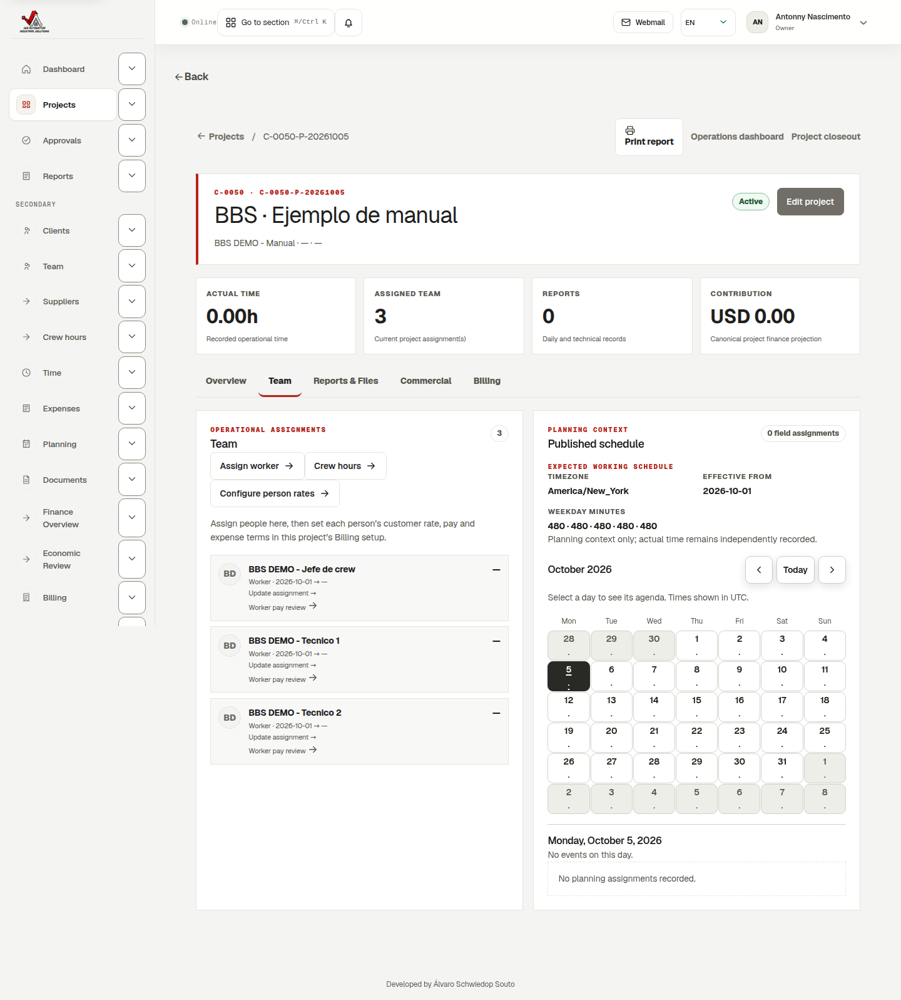
J&A Automation · Illustrated BBS guide
1 · Understand the complete workflow
| Item | Meaning |
|---|---|
| Issuer | J&A, the company selling services and issuing the invoice. |
| Client | The customer receiving the invoice and paying J&A. |
| Customer rate | What J&A charges for a person’s hour, worked day or worked week. |
| Worker pay | Separate compensation for that person. |
| Internal cost | The direct labor cost used in the project contribution calculation. |
| Expense | A source purchase with independent payer, reimbursement and client recovery rules. |
- Sign in as the owner and open Projects. Set up the client, project, assignments and dated commercial terms.
- Workers or a delegated crew chief record time and expenses, then submit them.
- An authorized reviewer approves the operational records. Finance reviews billability and expense classification.
- Configure billing streams and prepare invoice drafts. Review their source records, quantities, totals and PDF.
- For a real client invoice, approve, issue, download the final PDF, send it and separately record actual collection.
J&A Automation · Illustrated BBS guide
2 · Create a client and project
- In Projects, create the client if it does not exist. Enter its legal name, display name, currency, timezone, billing contact/email, billing address, payment terms and PO reference.
- Choose Create project. Select the client and enter the project name, cost center, currency, timezone and start date.
- This example uses Time & Materials (tm), USD, America/New_York, a 1 October start and PO BBS-DEMO-20261005.
- Review the optional assignment table. Add people and configure their terms during creation, or add them later in Team.
- Save once and reopen the project. Check the assigned team and client details.
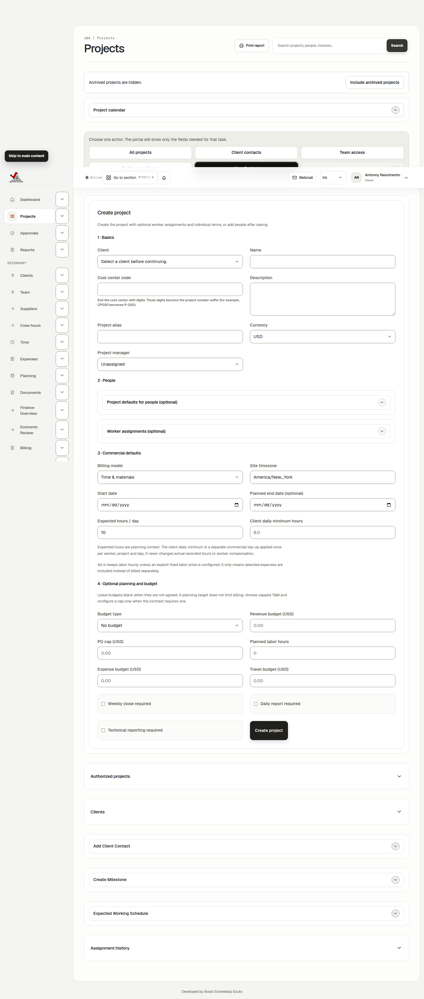
J&A Automation · Illustrated BBS guide
3 · Project defaults and person overrides
- Open Project → Billing → Configure project defaults. Set customer rate, internal cost, compensation and expense defaults for new assignments.
- The initial example defaults are USD 60/h customer revenue, USD 35/h internal cost, USD 30/h worker pay and worker-paid expenses reimbursed/recovered at cost.
- Open Configure this project’s invoices and continue to 3. Review each person. This step is in project billing setup, not inside an invoice.
- Set an effective date and edit each person. Click Save person terms; changing a visible field alone does not save it.
- If matching default rates should become explicit independent agreements, select Save these rates as explicit person overrides.
J&A Automation · Illustrated BBS guide
4 · J&A issuer and invoice details
- In 2. Billing details, J&A Automation is selected by default for the matching project currency. Review it when setting up new or existing projects.
- Check billing contact, recipient and payment terms. Selecting a project in New billing stream fills available project/client currency, PO, contact, email and terms.
- Select Standard, Detailed or Summary layout, and grouping by worker, day, category, detail or summary. These options affect presentation, not approved source money.
- Choose applicable labor and expense tax profiles if configured. The example has no tax profile; do not invent tax settings to copy it.
- Automatically preparing drafts is optional. It is disabled in the training project. Invoices are never automatically issued or sent by this setup.

J&A Automation · Illustrated BBS guide
5 · Crew chief: hourly billing and hourly pay
- Find the crew chief in Review each person.
- Select Customer billing unit: Hourly, customer rate USD 80/h and internal cost USD 45/h.
- Set the separate worker compensation method to Hourly, USD 40/h. The USD 80 customer charge is not the worker’s pay.
- For worker-paid expenses use at-cost reimbursement and client recovery with 10% markup.
- Save and reload. In stage 1, ten actual hours produce USD 800 customer labor and USD 400 expected compensation. No compensation payment is recorded.
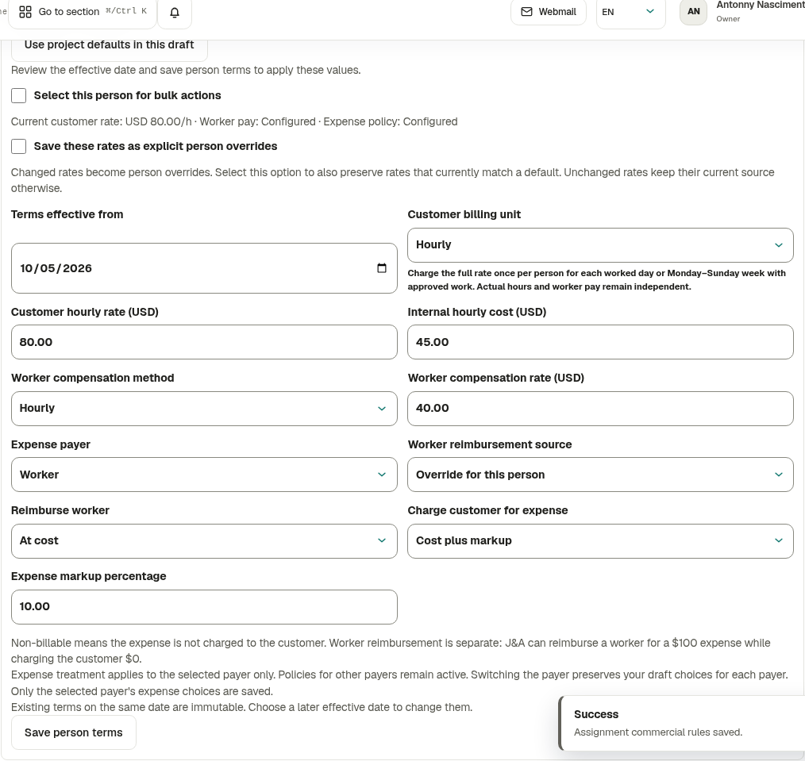
J&A Automation · Illustrated BBS guide
6 · Technician 1: full daily customer charge
- Set the new agreement effective from 5 October 2026. Earlier work remains at its initial USD 60/h customer rate.
- Choose Customer billing unit: Daily and customer daily rate USD 600.
- Keep worker pay Daily, USD 240/day, with internal cost USD 35/h. Customer daily charge and worker daily pay are separate fields.
- Keep worker-paid expenses, project-default reimbursement and client recovery at cost.
- Click Save person terms and reload. Two approved billable parts of 1.5 h and 0.5 h on one day charge one full day: USD 600.
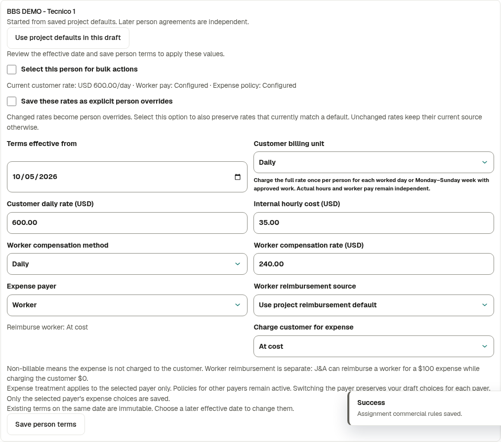
J&A Automation · Illustrated BBS guide
7 · Technician 2: weekly charge, fixed-period pay
- Starting 5 October 2026, select Customer billing unit: Weekly, USD 1500/week.
- Keep worker compensation Fixed per billing period, USD 900, and internal cost USD 30/h. The compensation period is not automatically the customer weekly charge unit.
- Use Company card for expenses, no worker reimbursement and expenses included in labor price.
- Save and reload. Check USD 1500/week and confirm the compensation and expense choices were preserved.
- The customer week is Monday–Sunday. Two approved billable parts of 2 h and 1.5 h in the same week charge USD 1500 once.
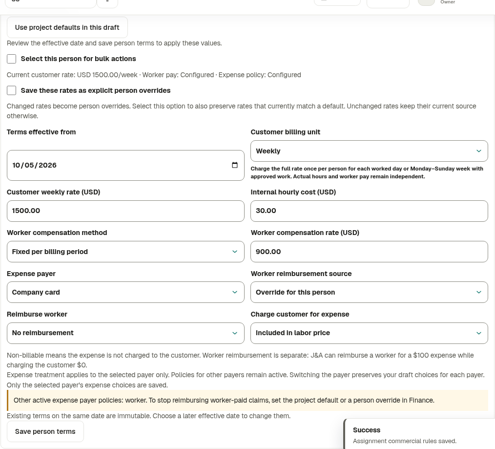
J&A Automation · Illustrated BBS guide
8 · More compensation and expense options
| Compensation method | How to use it |
|---|---|
| Hourly | Rate for eligible actual hours. |
| Daily | Daily compensation under its applicable rules. |
| Fixed per billing period | One configured amount for the applicable settlement period. |
| Fixed project amount | A project-level fixed agreement; review its settlement. |
| Percentage of eligible client labor | Configured percentage and eligible labor basis; not a percentage of every expense or tax. |
| Expense choice | Effect |
|---|---|
| Worker | Can reimburse at cost or not reimburse. |
| Company card / Company direct | Company pays; do not reimburse the worker. |
| Client / Third party | Identify the actual payer and review the applicable policy. |
| At cost / Cost plus markup | Recover the source cost or source cost plus markup from the client. |
| Included / Do not charge / Client pays directly | No additional labor-inclusive charge, nonbillable recovery or direct client payment. |
J&A Automation · Illustrated BBS guide
9 · Assign the crew and chief
- In Team, assign the three people with valid membership dates. The example accounts have the worker role.
- Configure the chief’s crew delegation and its effective dates. Assignment and delegation are separate permissions.
- As the chief, open Crew, select the project/date and the delegated workers.
- Use shared mode for common hours or individual mode for different hours. Choose category, description and whether to submit.
- The chief records personal hours in Time. Crew delegation does not grant owner access or all commercial data.
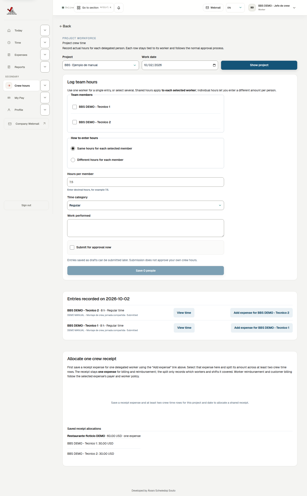
J&A Automation · Illustrated BBS guide
10 · Record and submit time
- In Time, a worker selects an assigned project, work date, category, duration and activity description.
- Use the category describing the work: regular time, travel, commissioning, overtime or another available category. Commercial rules determine treatment.
- Save the draft and submit it. A time draft alone is not invoice-ready.
- Review the time calendar or weekly sheet. To fix an existing record, use its permitted edit/correction path instead of making a duplicate.
- For 3 October, the chief enters 3 h travel for technician 1 and 6 h travel for technician 2 in individual crew mode.
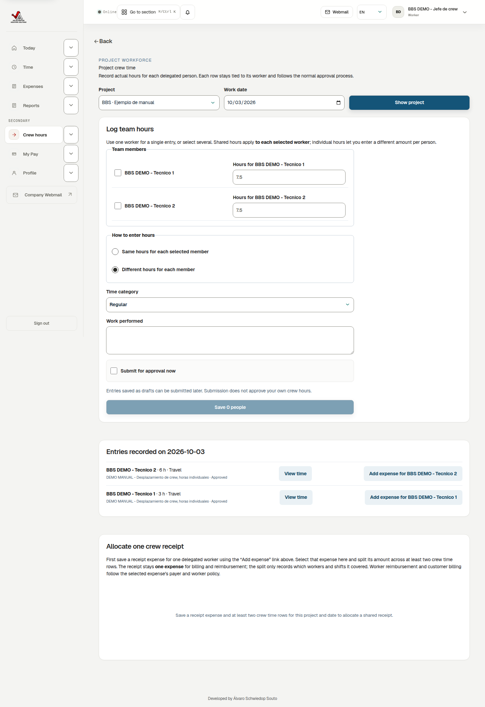
J&A Automation · Illustrated BBS guide
11 · Stage 1: 35 approved actual hours
| Person | 2 October | 3 October | Actual total | Initial customer revenue |
|---|---|---|---|---|
| Chief | 8 h commissioning | 2 h overtime | 10 h | USD 800 |
| Technician 1 | 8 h regular | 3 h travel | 11 h | USD 660 |
| Technician 2 | 8 h regular | 6 h travel | 14 h | USD 770 |
| Total | 24 h | 11 h | 35 h | USD 2230 |
- The chief/workers submit these six parts.
- An authorized reviewer approves them in Approvals.
- Finance records its review and marks eligible time billable.
- Open Finance → Economic Review → Time entries for the project and compare the six stage-1 rows with this table.
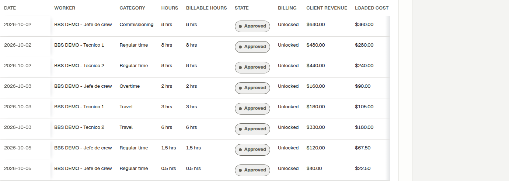
J&A Automation · Illustrated BBS guide
12 · Record expenses and a shared receipt
- In Expenses, choose project, worker, date, category, vendor, currency, amount and payer.
- Enter the business reason and attach a receipt where required. Save and submit.
- Record the fictional hotel at USD 100, paid by the worker. Record tools at USD 50, paid by company card.
- Within the delegation, the chief records a single USD 60 crew meal receipt and allocates USD 30 to each technician’s time record.
- The allocation links one expense to two parts. Do not add two extra USD 30 expenses; there remains one USD 60 financial source.
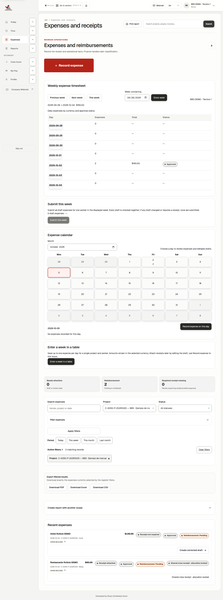
J&A Automation · Illustrated BBS guide
13 · Four approved, Finance-reviewed expenses
| Expense | Payer | Spent | Worker reimbursement | Client charge |
|---|---|---|---|---|
| Chief parking | Worker | 20 | 20 | 22 |
| Technician 1 hotel | Worker | 100 | 100 | 100 |
| Shared meal | Worker | 60 | 60 | 60 |
| Technician 2 tools | Company card | 50 | 0 | 0 |
| Total USD | 230 | 180 | 182 |
- Approve the operational expense first.
- In Finance, review/classify its commercial treatment: at cost, plus markup or included. Check the person, date, payer and category policy.
- Record Finance review. All four example expenses are approved, classified and reviewed.
- The client expense invoice has three additional charges: 22 + 100 + 60 = USD 182. Tools are included, so they add no expense charge.
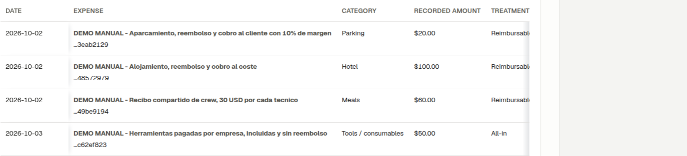
J&A Automation · Illustrated BBS guide
14 · Worker and chief views
- Workers review their own time, expenses and My Pay within their account permissions.
- For stage 1, technician 1 has 11 h and USD 480 expected daily compensation for two days; reimbursable hotel/meal expenses are USD 160.
- Technician 2 has 14 h and the configured USD 900 fixed compensation for the displayed period. It is not multiplied for each source part.
- The chief also has Crew access for delegated people. Owner/Finance configures commercial rates and prepares invoices.
- My Pay values are projections or compensation states; they do not prove a bank transfer.
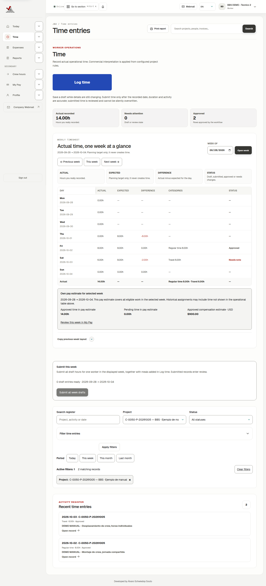
J&A Automation · Illustrated BBS guide
15 · Separate labor and expense billing streams
- At project billing setup step 1, choose One invoice with two sections or Two separate invoices.
- A combined stream includes approved labor and client-chargeable expenses. Separate streams allow different cadence and tax profiles.
- The example uses monthly expenses and weekly labor. Its first partial labor period is manual, 1–4 October; the following weekly stream starts Monday 5 October.
- In Billing → New billing stream, select the project, review autofilled fields and choose what cannot be inferred: stream, cadence, dates/anchor, layout, grouping and automation.
- Save the dated configuration. Review existing streams before creating another one.
| Cadence | Review |
|---|---|
| Weekly | Monday–Sunday boundaries and effective start. |
| Every 14 days | Anchor date and two-week cycle. |
| Semi-monthly | Two calendar periods per month. |
| Monthly | Source month and issuer coverage. |
| Manual | Explicit dates, useful for the initial partial period. |
J&A Automation · Illustrated BBS guide
16 · Create the 35-hour client invoice
- Open Billing → Create invoice draft.
- Select the training project and its initial Labor · Manual stream.
- Use period 1–4 October 2026. Review readiness: effective rates, approved/billable sources and availability.
- Prepare and open the draft in Preview. Check six sources, 35 actual hours and subtotal USD 2230.
- Verify the client, J&A issuer, PO, currency, descriptions, grouping and total. Click Download PDF · Preview.
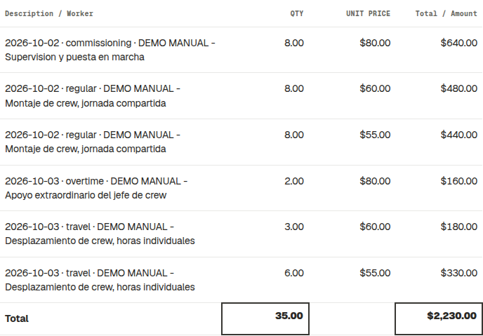
J&A Automation · Illustrated BBS guide
17 · Create the client expense invoice
- Choose the same project’s Expense · Monthly stream. This is the invoice to send to the client for recoverable expenses.
- Use 1–31 October 2026 and prepare the draft.
- Review three charges: parking USD 22, hotel USD 100 and shared meal USD 60. Subtotal: USD 182.
- The USD 50 tools expense is included in labor and adds no expense invoice charge. The meal appears once.
- Download its preview PDF. To actually send it, follow approval → issuance → final PDF → sending, as described in chapter 21.
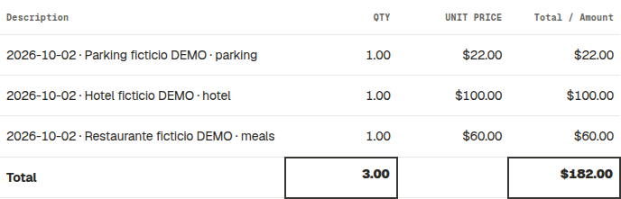
J&A Automation · Illustrated BBS guide
18 · One invoice with hourly, daily and weekly units
| Person | 5 October parts | Billable unit | Customer USD |
|---|---|---|---|
| Chief | 1.5 h + 0.5 h | 2 h × 80 | 160 |
| Technician 1 | 1.5 h + 0.5 h | 1 day × 600 | 600 |
| Technician 2 | 2 h + 1.5 h | 1 week × 1500 | 1500 |
| Total | 7.5 actual hours | Different unit types | 2260 |
- Record/submit the six stage-2 parts for 5 October. Obtain operational approval and Finance review.
- Choose Labor · Weekly, period 5–11 October 2026.
- Prepare the draft and verify USD 2260. Additional same-day/week parts are marked as already covered and add no further charge.
- The PDF keeps hours, days and weeks separate and preserves 7.5 h actual recorded time.
- Download the PDF. The project now has 42.5 h accumulated: 35 h stage 1 + 7.5 h stage 2.
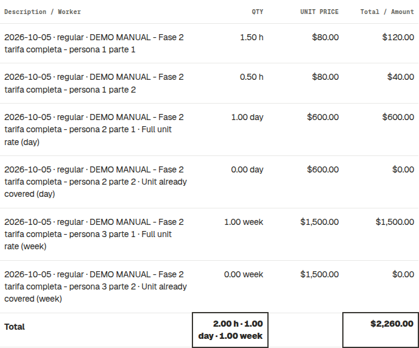
J&A Automation · Illustrated BBS guide
19 · Issuer coverage and legal revisions
- Open Finance → Project issuing authority. Review J&A’s legal revision and the project assignment dates.
- A legal revision preserves the company identity and address effective at that time. Later revisions retain earlier history.
- Consecutive assignments of the same revision may cover one continuous period: for example 28–30 September followed by 1 October onward.
- If coverage has a real missing day, PDF generation stays blocked. The message identifies issuer, project, invoice period and missing dates, with the place to review the setup.
- If a period crosses different issuer legal revisions, review or split the period. The app does not silently combine legal identities.
J&A Automation · Illustrated BBS guide
20 · Edit a draft and download its PDF
- Open the invoice preview. Editable invoice presentation fields are separate from approved source records.
- Review the available customization fields, such as PO, texts, terms and presentation. Save, reload and check the result.
- Rates and source money come from commercial rules and approved records. Use the correct dated agreement or source correction to change the financial basis.
- Click Download PDF · Preview. Confirm period, units and total in the downloaded document.
- When a rule/source changes while an invoice is a draft, use its available refresh/review actions and compare totals again.
J&A Automation · Illustrated BBS guide
21 · Approve, issue and send to the client
- When the draft is correct, the authorized role approves it. Approval is separate from issuance, sending and collection.
- Before issuing, configure an accountant-approved numbering policy for J&A and review all issuer, tax, date, source and readiness requirements. The example reports the missing approved policy and stays a draft.
- Issue a real invoice only after those requirements are satisfied. Issuance creates the historical financial document and final number. Wait until its final PDF is ready.
- Review the recipient/contact and use the available invoice sending action, or download the final PDF for your approved delivery process. Labor, expenses and combined invoices use this same lifecycle.
- Sending is not payment. Record an actual collection only after receipt; review unpaid, partially paid and paid balances.
- Correct an issued document through the available void/credit/adjustment/replacement lifecycle, preserving audit history.
J&A Automation · Illustrated BBS guide
22 · Final checks and troubleshooting
| Problem | Check |
|---|---|
| Cannot find Review each person | Project → Billing → step 3; assigned people and owner/Finance permission. |
| Sources missing | Project, period, submission, operational approval, Finance review and expense classification. |
| Already billed / no new charges | Reserved sources and previously charged day/week; do not duplicate records. |
| Cannot save terms | Effective date, active membership and overlapping approved invoices/finalized settlements. |
| PDF blocked | Issuer legal revision, currency and missing coverage dates in the message. |
| Cannot issue | Approved numbering policy and all readiness requirements. |
| Incomplete forecast | Planned hours alone cannot determine full customer days/weeks. |